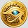

5-reel 20-line slots
The objective of Daring Dave & the Eye of Ra is to obtain winning symbol combinations by spinning the reels.
To play the game:
- Line bets are chosen by clicking + and - below Line Bet to increase or decrease the amount.
- The Daring Dave & the Eye of Ra game is always played with 20 active paylines. The number of active paylines is fixed and cannot be changed by the player.
- Total bet per game round = line bet X active paylines.
- Clicking Spin spins the reels with the current selection of lines and line bets. During the reel spin the Spin button changes intoStop. Clicking Stop ends the spin animation and immediately displays the spin result.
- Reels can also be spun using the Auto Play function. Mouse over the Auto Play button to display the list of options. Select the number of spins to be played automatically or choose Until Feature to spin until a Bonus round is triggered. Clicking on an option starts the Auto Play function. The Auto Play button changes into Stop during the Auto Play mode. The Auto Play mode ends when the reels have been spun the number of times determined by the player, or when a Bonus round is triggered, or when the player clicks Stop.
- Wins are calculated according to the paytable. Line win = line bet X corresponding multiplier according to the paytable. Scatter win = total bet X corresponding multiplier according to the paytable. The paytable can be accessed via the Info page.
- On a given payline, only the highest payline winning combination pays while simultaneous winnings on different paylines are accumulated.
- In the case of a winning spin, the Win field displays the accumulating winnings. The Win ticker can be stopped by clicking anywhere on the screen to display the total win amount immediately.
- Payline wins and the total win are also displayed on the strip located at the bottom of the reels or the game window.
Info page:
- Clicking Info opens the reference screen describing different game components. Clicking the arrow buttons at the lower right-hand corner of the screen enables navigating between the different info screens.
- The Paytable screen shows all winning combinations. When opened after a winning spin, the winning symbol combinations (number of symbols and bet multiplier) are highlighted and blink.
- The Quest for the Eye of Ra Bonus screen describes the necessary combination of symbols to enter the Bonus and describes the common Bonus rounds rules.
- The Quest for the Eye of Ra Bonus, Episode I screen describes the 1st Bonus level rules.
- The Quest for the Eye of Ra Bonus, Episode II screen describes the 2nd Bonus level rules.
- The Quest for the Eye of Ra Bonus, Episode III screen describes the 3rd Bonus level rules.
- Clicking Show Paylines on the Paytable page, opens a screen that illustrates all possible payline combinations. Clicking Hide Paylines closes this screen and returns to the Paytable page.
- Clicking Back exits the Info screen and returns to the game.
Paylines:
Active paylines are represented by lines that appear over the reels as illustrated in the Paylines screen of the Info page.
- All 20 active paylines can register wins.
- There is a difference between the line bet and the total bet. The line bet shows how much is being bet on a single payline. The total bet shows how much is being bet in total on the game round. Payouts shown in the paytable are multiplied by the line bet.
The Scatter symbol is an exception to these rules. More information about the Scatter symbol can be found below.
About payouts:
- Payouts are listed on the Paytable screen. To find the possible win amount, the line bet must be multiplied by the payout.
- If two payline winning combinations occur on the same line, the higher of them is paid out. If more than one active payline has a winning combination, the winnings are accumulated.
- Winning combinations must start from the leftmost reel, and the symbols have to be consecutive.
The Scatter symbol is an exception to these rules. More information about the Scatter symbol can be found below.
Maximum Win Limit
The maximum win in the game has an upper limit. For more information, see the Terms and Conditions section.
Wild SymbolThe Wild symbol can stand for any other symbol, except Scatter and Bonus, to make the best possible winning combination. The Wild symbol can act as Expanding Wild as well, as explained below.
Whenever the Wild symbol appears anywhere on reels #2, #3 or #4 and creates a winning combination in any position of either of these reels it expands to cover the entire reel. All positions on this reel become Wild. All resulting winning combinations are paid.
There is also a separate payout for 2 or more Wild symbols on an active payline, as seen in the paytable. This is paid out instead of the regular symbol win if the win amount from Wild symbols is larger than the win from the regular symbols (by Wild standing in).
Scatter Symbol
The Scatter symbols  do not have to occur on any particular payline. If there are 2 or more Scatter symbols in any position in the spin results, the payout earned is multiplied by the total bet and added to payline winnings.
Bonus Symbol
The Bonus symbol  appears only on reels #1 and #5. If the Bonus symbol appears anywhere on reels #1 and #5 simultaneously, the Quest for the Eye of Ra Bonus is triggered. More information about the Quest for the Eye of Ra Bonus can be found below.
appears only on reels #1 and #5. If the Bonus symbol appears anywhere on reels #1 and #5 simultaneously, the Quest for the Eye of Ra Bonus is triggered. More information about the Quest for the Eye of Ra Bonus can be found below.
Quest for the Eye of Ra Bonus
The Quest for the Eye of Ra Bonus is triggered by the appearance of 2 Bonus symbols on reels #1 and #5 simultaneously during the game.
The Quest for the Eye of Ra Bonus features 3 levels (episodes), during which you face 3 exciting adventures. Your quest status will remain the same if you exit and/or re-enter the Bonus as well as the game. This means that whenever you win a Bonus, it will commence from the point you reached the last time you played the respective Bonus level. If you have completed Level 3, the Bonus will start again from Level 1 when you win the next Bonus round.
Note: Your advance in the Bonus rounds will be remembered for each different total bet amount. This means that whenever you change your total bet before re-entering a Bonus round your quest status will be restored to the point you reached the last time you played the Bonus round with the newly set total bet amount.
To start the Quest for the Eye of Ra Bonus, click on Click to Start.
Quest for the Eye of Ra Bonus, Episode I
In the depths of the pyramid you are presented with 8 stones, located on both sides of a stone entrance, guarded by the Egyptian god Anubis. All stones stand for cash prizes, but only 3 of them will reveal the symbol of the Eye of Ra. Collecting all 3 symbols will end Level 1 and lead you to the next one. You have to push 3 stones, by clicking on them 1 by 1. Your bonus cash prize for the current round will equal the sum of the 3 stones that were chosen.
Click Continue to return to the game.
If you have not completed the Bonus level and you re-enter the Bonus, your previous results will be remembered and you will be able to continue the Bonus round from the point you last played the Bonus. Immediately after you have collected all 3 symbols of the Eye of Ra, Level 1 ends.
Quest for the Eye of Ra Bonus, Episode II
A screen appears saying that the Quest for the Eye of Ra Bonus, Level 2 is unlocked.
Deeper in the pyramid a room is shown and you are faced with a huge wheel. Each field on the outer side of this wheel stands either for cash prizes (presenting a multiple of the total bet as written in the field), or an illustration of the symbol of the Eye of Ra. You have to spin the wheel 3 times by clicking on the Spin button in the middle of the wheel. When any of the symbols of the Eye of Ra is aligned to a pointer for the 1st time, then the pointer is lit up and remains like this until the other 2 pointers are lit up, too. Your cash prize bonus represents the total bet multiplied by the sum of the multipliers, which have been aligned to the pointers during the current Bonus round. Aligning any of the 4 symbols of the Eye of Ra with the 3 different pointers of the wheel will end Level 2 and lead you to the next one.
Click Continue to return to the game.
If you have not completed the Bonus level and you re-enter the Bonus, your previous results will be remembered and you will be able to continue the Bonus round from the point you have left the previous time you entered the Bonus. Immediately after you have lighted all 3 Eye-of-Ra symbols, Level 2 ends.
Quest for the Eye of Ra Bonus, Episode III
A screen appears saying that the Quest for the Eye of Ra Bonus, Level 3 is unlocked.
Further deep into the pyramid you are presented with a huge statue of the sun God Ra with 3 pedestals in front. You have to guess which of the 3 will lead you to the Eye of Ra by choosing 1 at a time by clicking on it. All pedestals stand for different cash prizes. The correct pedestal, however, will reveal the maximum Bonus cash prize equal to the total bet x75.
Note: The game will remember which pedestals have been chosen when exiting and re-entering the bonus game. If you enter the bonus stage for a 3rd time, your win is guaranteed.
Click Continue to return to the game.
If you have not completed the Bonus level and you re-enter the Bonus, your previous results will be remembered and you will be able to continue the Bonus round from the point you have left the previous time you entered the Bonus.
At the end of each Bonus round, a win screen displays your winnings. Game Win shows the winnings that were received from the main game that won the Bonus. Feature Win shows the winnings that were received during the Bonus. Total Win shows the accumulated winnings (Game Win and Feature Win added up). If no winnings were received during the spin that won the Bonus, then only the Total Win field will be shown.
Return to Player
The theoretical percentage return to player (RTP) is 95.18%.